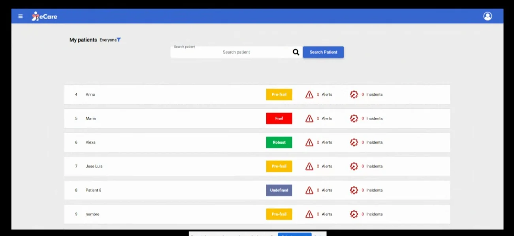
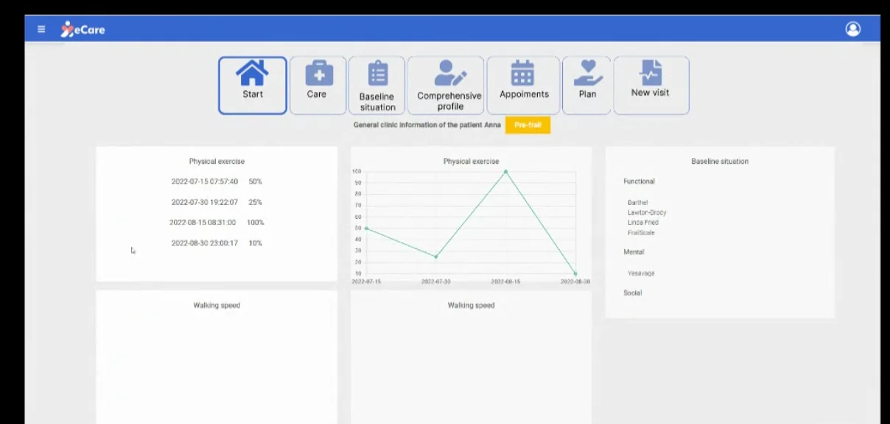
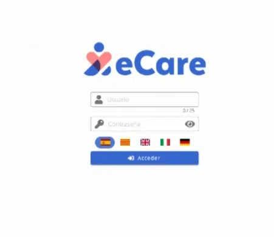

eCare: gestión social y de la fragilidad para un proyecto europeo
Integramos el sistema de Televes con una plataforma de mejora de la fragilidad en personas mayores, pensada para los distintos profesionales de la salud que las atienden.
Hablemos de tu proyectoDe un vistazo
- Antes
Dos sistemas por separado
Por un lado, el sistema de Televes; por otro, una plataforma de mejora de la fragilidad en personas mayores.
- Ahora
Una plataforma integrada para profesionales
Gestión de usuarios, visitas, historial clínico y videollamada en un mismo lugar, integrada con FHIR y accesible según WCAG.
- Resultado
- 4perfiles profesionales con su propia vista
- 4idiomas: español, catalán, italiano y alemán
- FHIRintegración con estándares de salud
Contexto
eCare es una plataforma de gestión social y de la fragilidad que desarrollamos junto con Televes para dar soporte a la investigación de un proyecto europeo.
Consiste en la integración entre el sistema de Televes y una plataforma de mejora de la fragilidad en personas mayores, de uso para profesionales de la salud.
Problema
Cuidar la fragilidad de una persona mayor implica a varios profesionales: geriatría, atención primaria, nutrición y trabajo social. Cada uno necesita ver la información que le corresponde y trabajar sobre un mismo historial.
Además, el proyecto se desarrollaba en varios países, por lo que la plataforma debía funcionar en distintos idiomas, ser accesible y resultar fácil de usar para personal sanitario con poco tiempo.
Solución
Integramos el sistema de Televes con la plataforma de mejora de la fragilidad y desarrollamos la aplicación web para los profesionales. El trabajo incluyó:
- Gestión de usuarios y de perfiles profesionales: geriatras, médicos de atención primaria, nutricionistas y asistentes sociales.
- Desarrollo web conforme a las pautas de accesibilidad WCAG.
- Diseño centrado en la usabilidad para el personal médico.
- Integración con FHIR, el estándar de intercambio de datos de salud.
- Comunicación por videollamada.
- Visitas e historial clínico dentro de la propia plataforma.
- Interfaz multiidioma: español, catalán, italiano y alemán.
Es el tipo de trabajo que hacemos en software a medida e investigación e innovación.



Resultados
Los profesionales de la salud cuentan con una única plataforma, con cuatro perfiles de uso, donde gestionar visitas y consultar el historial clínico, comunicarse por videollamada y trabajar en su idioma.
La integración con FHIR permite que la plataforma se conecte con otros sistemas de salud, y el sistema de Televes queda integrado en la misma herramienta.
Otros casos de éxito
Empieza por una conversación de treinta minutos
Cuéntanos qué necesitas y te decimos honestamente si podemos ayudarte.